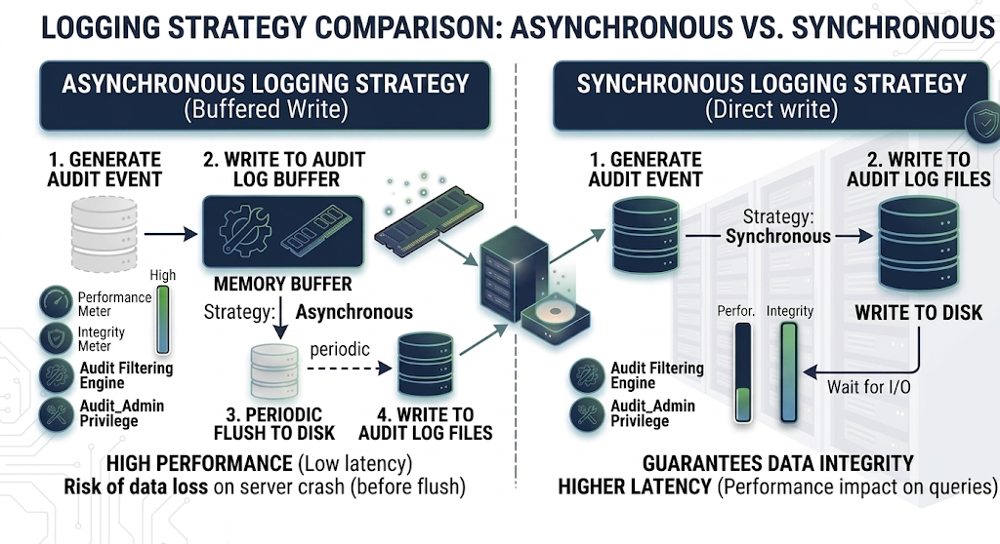

Audit log filter functions, options, and variables¶
Reference for audit log filter functions and options / variables.
Audit log filter functions¶
Available UDFs:
audit_log_encryption_password_get(keyring_id)¶
Returns the audit encryption password (and iteration metadata) from the enabled keyring. Without a working keyring, the call errors.
Parameters¶
keyring_id — Omit to fetch the active password. Pass a keyring ID to read a specific archived or current entry.
Returns¶
JSON with password and iterations for the requested keyring entry.
Example¶
SELECT audit_log_encryption_password_get();
Expected output
+---------------------------------------------+
| audit_log_encryption_password_get() |
+---------------------------------------------+
| {"password":"passw0rd","iterations":5689} |
+---------------------------------------------+
audit_log_encryption_password_set(new_password)¶
Sets a new audit encryption password in the keyring (and may rotate the log file when encryption is active—see Audit Log Filter compression and encryption).
Parameters¶
new_password — String up to 766 bytes.
Returns¶
OK on success; an error string on failure.
Example¶
SELECT audit_log_encryption_password_set('passw0rd');
Expected output
+-----------------------------------------------------+
| audit_log_encryption_password_set('passw0rd') |
+-----------------------------------------------------+
| OK |
+-----------------------------------------------------+
audit_log_filter_flush()¶
Reloads filter JSON and account rows from mysql.audit_log_filter / mysql.audit_log_user into the component so memory matches disk.
Table edits alone—including direct DML and audit_log_filter_set_filter()—do not refresh every open session. Call audit_log_filter_flush() when all sessions must see new rules (details under Persistence and refreshing on audit_log_filter_set_filter()).
From Percona Server for MySQL 8.4.9-9 onward, a flush detaches existing sessions until they reconnect or run CHANGE_USER; new connections pick up the reloaded registry immediately. If you cannot tolerate a gap, reconnect clients after flushing.
If audit_log_filter_flush() fails, the call returns an error message in the result string and the previously loaded filter rules and user assignments stay in effect. The audit log keeps writing under the prior configuration until the next successful flush replaces it. Retry the call after correcting the underlying cause so that the new on-disk rules take effect.
This function requires the AUDIT_ADMIN privilege.
Parameters¶
None.
Returns¶
This function returns either an OK for success or an error message for failure.
Example¶
SELECT audit_log_filter_flush();
Expected output
+--------------------------+
| audit_log_filter_flush() |
+--------------------------+
| OK |
+--------------------------+
audit_log_read()¶
Reads JSON or JSONL audit files and returns events as a JSON array string. Other formats error.
Parameters¶
The function accepts a single JSON argument that selects a starting point. Four forms are valid:
-
Empty or omitted argument. The function continues from the current read cursor in this session. Calling
audit_log_read()with no argument is equivalent to passing'{}'. Both forms require a read context that an earlier call already established. Without a context, the call returns theWrong argument formaterror. -
startenvelope. The function begins a new read sequence at the position described by an inner bookmark. The bookmark acceptstimestampandid. Atimestamp-only start is legal. When the timestamp has no time part, the component assumes00:00:00. -
Bookmark literal. Pass the JSON returned by
audit_log_read_bookmark()directly, with nostartenvelope. The bookmark form requires bothtimestampandid. Passing one without the other returns theWrong argument formaterror. Passing a non-stringtimestampor a non-integeridreturns thebad bookmark formaterror. -
JSON
null. The argument'null'closes the active read sequence in this session. Use this form to release the reader cursor before opening a new sequence with a differentstartor bookmark. The function returns the stringOK.
Position arguments are mutually exclusive. A single call cannot combine start with a top-level timestamp or id. A call cannot supply a new start or bookmark while a read context is already active in the session. To reposition, close the sequence with 'null' and then issue a new start or bookmark literal.
The optional max_array_length key caps how many events the call returns. Use it to page through dense periods or to limit response size. The key is valid in any form that supplies a position.
Seed reads with audit_log_read_bookmark() when you want to resume from the tail of the log.
Returns¶
JSON array text, JSON NULL when no more events are available, the literal string OK when the call closes the active read sequence with the 'null' argument, or an error. From Percona Server 8.4.8-8 onward, output is strictly valid JSON, honors max_array_length, and resumes cleanly from bookmarks.
Examples¶
Continue from the bookmark returned by audit_log_read_bookmark():
SELECT audit_log_read(audit_log_read_bookmark());
Expected output
+------------------------------------------------------------------------------+
| audit_log_read(audit_log_read_bookmark()) |
+------------------------------------------------------------------------------+
| [{"timestamp": "2023-06-02 09:43:25", "id": 10, "class": "connection"}] |
+------------------------------------------------------------------------------+
Start a new read sequence at an explicit timestamp:
SELECT audit_log_read('{"start": {"timestamp": "2026-05-20 12:28:10"}}');
Start a new read sequence at the beginning of a date. The component assumes a 00:00:00 time part when the timestamp omits one:
SELECT audit_log_read('{"start": {"timestamp": "2026-05-20"}}');
Cap the number of events returned in one call by combining start with max_array_length:
SELECT audit_log_read('{"start": {"timestamp": "2026-05-20 12:28:10"}, "max_array_length": 3}');
Address a single specific event by passing a bookmark literal with timestamp and id and no start envelope:
SELECT audit_log_read('{"timestamp": "2026-05-20 12:28:10", "id": 1561422}');
Close the active read sequence so that the next call can open a new one at a different position:
SELECT audit_log_read('null');
audit_log_read_bookmark()¶
Returns a JSON bookmark for the latest event (JSON / JSONL only—other formats error).
Pass the bookmark into audit_log_read() to begin there.
SELECT audit_log_read(audit_log_read_bookmark());
Parameters¶
None.
Returns¶
This function returns a JSON string containing a bookmark for success or NULL and an error for failure.
Example¶
SELECT audit_log_read_bookmark();
Expected output
+----------------------------------------------------+
| audit_log_read_bookmark() |
+----------------------------------------------------+
| {"timestamp": "2023-06-02 09:43:25", "id": 10} |
+----------------------------------------------------+
audit_log_session_filter_id()¶
Returns the active filter ID for this session, or 0 when no filter applies.
audit_log_filter_remove_filter(filter_name)¶
Drops a filter definition and clears mysql.audit_log_user rows that pointed at it.
From Percona Server for MySQL 8.4.9-9, only sessions using that filter detach; others keep logging.
This function requires the AUDIT_ADMIN privilege.
Parameters¶
filter_name - a selected filter name as a string.
Returns¶
This function returns either an OK for success or an error message for failure.
If the filter name does not exist, no error is generated.
Example¶
SELECT audit_log_filter_remove_filter('filter-name');
Expected output
+------------------------------------------------+
| audit_log_filter_remove_filter('filter-name') |
+------------------------------------------------+
| OK |
+------------------------------------------------+
audit_log_filter_remove_user(user_name)¶
Removes the mysql.audit_log_user row for that account pattern.
Open sessions keep their cached filter until reconnect/CHANGE_USER; new sessions fall back to the % default or stop auditing if none exists.
Passing user_name = '%' clears the default assignment.
This function requires the AUDIT_ADMIN privilege.
Parameters¶
user_name - a selected user name in either the user_name@host_name format or %.
Returns¶
This function returns either an OK for success or an error message for failure.
If the user_name has no filter assigned, no error is generated.
Example¶
SELECT audit_log_filter_remove_user('user-name@localhost');
Expected output
+------------------------------------------------------+
| audit_log_filter_remove_user('user-name@localhost') |
+------------------------------------------------------+
| OK |
+------------------------------------------------------+
audit_log_rotate()¶
Rotates the active audit file immediately and returns the archived name.
From 8.4.9-9, colliding timestamps add a -N suffix so rotations never overwrite each other.
This function requires the AUDIT_ADMIN privilege.
Parameters¶
None.
Returns¶
This function returns the renamed file name.
Example¶
SELECT audit_log_rotate();
audit_log_filter_set_filter(filter_name, definition)¶
Writes JSON for filter_name to mysql.audit_log_filter (create or update). Each stored revision gets a new filter ID.
From Percona Server for MySQL 8.4.9-9, validation runs at parse time—bad fields, unknown classes/subclasses, empty arrays, stray JSON keys, or broken print rules abort the call with a detailed error, for example:
ERROR: Incorrect rule definition: Unknown field name "WRONG.str" for class "general"
Before 8.4.9-9, the parser silently ignored unknown keys. Misspelling a structural key (for example classes instead of class) caused the subtree to be skipped, and the filter fell back to default behavior (log everything) with no error. Upgrade to 8.4.9-9 or later to catch these mistakes. For details, see Filter definition validation.
In REDUCED event mode, a filter definition that references disabled event classes or subclasses fails the same way (error returned, filter not stored).
This function requires the AUDIT_ADMIN privilege.
Persistence and refreshing¶
audit_log_filter_set_filter() persists JSON but does not patch in-memory state for every open session. Run audit_log_filter_flush() to reload all definitions into the component.
After 8.4.9-9 flushes, existing sessions detach until reconnect/CHANGE_USER; brand-new sessions pick up changes immediately.
Parameters¶
-
filter_name- a selected filter name as a string. -
definition- Defines the definition as a JSON value.
Returns¶
This function returns either an OK for success or an error message for failure.
Example¶
SET @filter = '{ "filter": { "log": true } }';
SELECT audit_log_filter_set_filter('filter-name', @filter);
Expected output
+-------------------------------------------------------------+
| audit_log_filter_set_filter('filter-name', @filter) |
+-------------------------------------------------------------+
| OK |
+-------------------------------------------------------------+
audit_log_filter_set_user(user_name, filter_name)¶
Binds filter_name to a login pattern in mysql.audit_log_user.
From Percona Server for MySQL 8.4.4, host wildcards (%, _) work in the host portion ('usr1@%', 'usr2%172.16.10.%', 'usr3@%.mycorp.com', …).
This UDF controls which named filter loads for a session. JSON user / host keys inside the filter still narrow events after load—they are not a second assignment row. See Assignment vs rules inside the JSON.
Avoid overlapping patterns unless you accept ambiguous matches—prefer literals or one pattern plus %.
One active mapping per account row; this call replaces any previous mapping.
From 8.4.9-9, open sessions keep the old mapping until reconnect/CHANGE_USER; flush if you must realign everyone immediately.
The special user % is the default row used when no literal match exists; specific user@host rows always beat %.
This function requires the AUDIT_ADMIN privilege.
Parameters¶
-
user_name- a selected user name in either theuser_name@host_nameformat or%. -
filter_name- a selected filter name as a string.
Returns¶
This function returns either an OK for success or an error message for failure.
Example¶
SELECT audit_log_filter_set_user('user-name@localhost', 'filter-name');
Expected output
+-------------------------------------------------------------------+
| audit_log_filter_set_user('user-name@localhost', 'filter-name') |
+-------------------------------------------------------------------+
| OK |
+-------------------------------------------------------------------+
Audit log filter options and variables¶
Audit Log Filter component uses the SQL form audit_log_filter.<option> (for example audit_log_filter.file).
Command-line and option file conventions¶
Use the same option spelling as the Command-line field in each variable’s reference table: the long name uses hyphens in the audit-log-filter prefix and keeps a dot before the option (for example --audit-log-filter.file). Read-only options require a server restart; use SET GLOBAL only where that variable is documented as dynamic.
Variable index¶
These are system variables (audit_log_filter.<option>). Each entry below the index lists its command-line name and whether it is dynamic.
Variables¶
audit_log_filter.buffer_size¶
| Option name | Description |
|---|---|
| Command-line | –audit-log-filter.buffer-size |
| Dynamic | No |
| Scope | Global |
| Data type | Integer |
| Default | 1048576 |
| Minimum value | 4096 |
| Maximum value | 18446744073709547520 |
| Units | bytes |
| Block size | 4096 |
Read-only size of the asynchronous audit buffer (multiples of 4096 bytes). Events queue here before hitting disk. Requires restart to change.
The component allocates one buffer for its lifetime.
Example¶
my.cnf (restart required):
[mysqld]
audit-log-filter.buffer-size=2097152
audit_log_filter.compression¶
| Option name | Description |
|---|---|
| Command-line | –audit-log-filter.compression |
| Dynamic | No |
| Scope | Global |
| Data type | Enumeration |
| Default | NONE |
| Valid values | NONE or GZIP |
Read-only compression mode: NONE (default) or GZIP. Requires restart.
Example¶
my.cnf (restart required):
[mysqld]
audit-log-filter.compression=GZIP
audit_log_filter.database¶
| Option name | Description |
|---|---|
| Command-line | –audit-log-filter.database |
| Dynamic | No |
| Scope | Global |
| Data type | String |
| Default | mysql |
Read-only database hosting audit_log_filter / audit_log_user. Must be non-NULL, ≤ 64 characters, and valid—otherwise the component cannot start. Restart to change.
Example¶
my.cnf (restart required):
[mysqld]
audit-log-filter.database=mysql
audit_log_filter.direct_io¶
| Option name | Description |
|---|---|
| Command-line | –audit-log-filter.direct-io |
| Dynamic | No |
| Scope | Global |
| Data type | Boolean |
| Default | OFF |
Introduced in Percona Server for MySQL 8.4.9-9.
This variable is tech preview and may be removed in a future release.
This read-only variable opens the audit log file with O_DIRECT on Linux, bypassing the OS page cache. This variable requires a server restart to change.
When enabled, audit log writes bypass the Linux page cache, reducing memory pressure on busy servers with high audit log throughput.
Writes use a 4 KB aligned staging buffer internally.
If the file system does not support O_DIRECT or a direct write fails at runtime, the component gracefully falls back to buffered I/O with a warning.
Whether O_DIRECT works depends on the file system that backs the audit log path. Local ext4 and XFS volumes usually support direct I/O; tmpfs usually does not. Confirm support for the audit log directory before enabling audit_log_filter.direct_io.
Example¶
my.cnf (restart required):
[mysqld]
audit-log-filter.direct-io=ON
audit_log_filter.disable¶
| Option name | Description |
|---|---|
| Command-line | –audit-log-filter.disable |
| Dynamic | Yes |
| Scope | Global |
| Data type | Boolean |
| Default | OFF |
When ON, stops audit output for all sessions.
Runtime changes need SYSTEM_VARIABLES_ADMIN and AUDIT_ADMIN.
Example¶
Runtime:
SET GLOBAL audit_log_filter.disable = ON;
Persist across restarts (my.cnf):
[mysqld]
audit-log-filter.disable=ON
audit_log_filter.encryption¶
| Option name | Description |
|---|---|
| Command-line | –audit-log-filter.encryption |
| Dynamic | No |
| Scope | Global |
| Data type | Enumeration |
| Default | NONE |
| Valid values | NONE or AES |
This read-only variable defines the encryption type for the audit log filter file. This variable requires a server restart to change. The values can be either of the following:
-
NONE- the default value, no encryption -
AES
Example¶
my.cnf (restart required):
[mysqld]
audit-log-filter.encryption=AES
audit_log_filter.event_mode¶
| Option name | Description |
|---|---|
| Command-line | –audit-log-filter.event-mode |
| Dynamic | Yes |
| Scope | Global |
| Data type | Enumeration |
| Default | REDUCED |
| Available values | REDUCED, FULL |
Introduced in Percona Server for MySQL 8.4.9-9.
This variable controls which event classes and subclasses are processed by the audit log filter component.
REDUCED (default) — limits processing to the four classes general, connection, table_access, and message. Only the subclasses in the following list are enabled. The extended classes are not processed in this mode.
-
general/status -
connection/connect,connection/disconnect,connection/change_user -
table_access/* -
message/*
The following event classes exist in the server but are disabled in REDUCED mode (they are available only in FULL mode):
-
global_variable -
command -
query -
stored_program -
authentication -
parse
The audit log filter disables the following subclasses in REDUCED mode:
-
general/log -
general/error -
general/result -
connection/pre_authenticate
In REDUCED mode, calling a stored procedure logs the outer CALL statement but not the individual SQL statements executed inside the procedure body. The general/status event generated by the internal Quit command is also suppressed in REDUCED mode.
FULL — all event classes and subclasses are processed, including global_variable, command, query, stored_program, authentication, and parse on top of the REDUCED set. Through Percona Server for MySQL 8.4.8-8 there was no audit_log_filter.event_mode setting; the component always processed the full class set (equivalent to FULL). The variable was introduced in 8.4.9-9 with default REDUCED.
Runtime mode switch¶
Set event_mode in my.cnf and restart the server. Changing the value on a running server produces inconsistent audit output and is not recommended.
Changing event_mode at runtime invalidates the cached audit rules and bumps the filter generation. Each session recompiles its filter against the new mode on the next event the session emits.
The switch creates a window where in-flight events can be evaluated inconsistently. The new mode value becomes visible before the audit rule cache is invalidated. The cache invalidation does not atomically refresh every session. The behavior applies to switches in either direction, between REDUCED and FULL.
During this window, events may be:
-
Filtered against the previous mode’s compiled rules even after the new mode is in effect.
-
Logged inconsistently across sessions, because one session has already picked up the new filter generation while another session still applies the previous compiled cache.
If a restart is not possible, narrow the window by following the SET GLOBAL change with audit_log_filter_flush() inside a maintenance window with minimal auditable traffic. The flush detaches existing sessions and forces each session to recompile against the new mode on reconnect or CHANGE_USER. Audit output during the switch window cannot be reconciled after the fact.
Example¶
Set in my.cnf and restart the server. This is the recommended form:
[mysqld]
audit-log-filter.event-mode=FULL
The runtime form is shown for reference only. See the runtime mode switch caveats before using it:
SET GLOBAL audit_log_filter.event_mode = 'FULL';
SELECT @@GLOBAL.audit_log_filter.event_mode;
In REDUCED mode, if you call audit_log_filter_set_filter() with a new filter definition that references disabled event classes or subclasses, the call fails: the server returns a descriptive error and does not store the filter. However, persisted filters created under FULL mode that reference disabled classes will still load after a restart or audit_log_filter_flush() — the disabled classes are silently skipped with a warning.
audit_log_filter.file¶
| Option name | Description |
|---|---|
| Command-line | –audit-log-filter.file |
| Dynamic | No |
| Scope | Global |
| Data type | String |
| Default | audit_filter.log |
This read-only variable defines the filename of the audit log filter file. The component writes events to this file. This variable requires a server restart to change.
The filename can be either of the following:
-
a relative path name - the component looks for this file in the data directory
-
a full path name - the component uses the given value
If you use a full path name, ensure the directory exists and is accessible only to users who need to view the log and the server. If the parent directory does not exist, the component reports an error and the server starts without the audit log filter component active.
For more information, see Naming conventions
Example¶
Relative to the data directory (my.cnf, restart required):
[mysqld]
audit-log-filter.file=audit_filter.log
Absolute path:
[mysqld]
audit-log-filter.file=/var/log/mysql/audit_filter.log
audit_log_filter.format¶
| Option name | Description |
|---|---|
| Command-line | –audit-log-filter.format |
| Dynamic | No |
| Scope | Global |
| Data type | Enumeration |
| Default | NEW |
| Available values | OLD, NEW, JSON, JSONL |
This read-only variable defines the audit log filter file format. This variable requires a server restart to change.
The available values are the following:
Example¶
my.cnf (restart required):
[mysqld]
audit-log-filter.format=JSON
audit_log_filter.format_unix_timestamp¶
| Option name | Description |
|---|---|
| Command-line | –audit-log-filter.format-unix-timestamp |
| Dynamic | Yes |
| Scope | Global |
| Data type | Boolean |
| Default | OFF |
Introduced in Percona Server for MySQL 8.4.9-9, this option is supported for JSON-format and JSONL-format files.
Enabling this option adds a time field to JSON-format and JSONL-format files. The integer represents the UNIX timestamp value and indicates the date and time when the audit event was generated. Changing the value causes a file rotation because all records must either have or do not have the time field. This option requires the AUDIT_ADMIN and SYSTEM_VARIABLES_ADMIN privileges.
This option does nothing when used with other format types.
Example¶
Runtime (JSON-format or JSONL-format only; causes rotation when toggled):
SET GLOBAL audit_log_filter.format_unix_timestamp = ON;
Persist across restarts (my.cnf):
[mysqld]
audit-log-filter.format-unix-timestamp=ON
audit_log_filter.handler¶
| Option name | Description |
|---|---|
| Command-line | –audit-log-filter.handler |
| Dynamic | No |
| Scope | Global |
| Data type | String |
| Default | FILE |
This read-only variable defines where the component writes the audit log filter file. This variable requires a server restart to change. The following values are available:
-
FILE- component writes the log to a location specified inaudit_log_filter.file -
SYSLOG- component writes to the syslog
Example¶
Write to a file under the data directory (my.cnf, restart required):
[mysqld]
audit-log-filter.handler=FILE
audit-log-filter.file=audit_filter.log
Write to syslog (use with audit_log_filter.syslog_tag and related options):
[mysqld]
audit-log-filter.handler=SYSLOG
audit-log-filter.syslog-tag=myapp-audit
audit_log_filter.key_derivation_iterations_count_mean¶
| Option name | Description |
|---|---|
| Command-line | –audit-log-filter.key-derivation-iterations-count-mean |
| Dynamic | Yes |
| Scope | Global |
| Data type | Integer |
| Default | 600000 |
| Minimum value | 1000 |
| Maximum value | 1000000 |
Defines the mean value of iterations used by the password-based derivation routine while calculating the encryption key and iv values. A random number represents the actual iteration count and deviates no more than 10% from this value.
Example¶
Runtime:
SET GLOBAL audit_log_filter.key_derivation_iterations_count_mean = 120000;
audit_log_filter.max_size¶
| Option name | Description |
|---|---|
| Command-line | –audit-log-filter.max-size |
| Dynamic | Yes |
| Scope | Global |
| Data type | Integer |
| Default | 1073741824 |
| Minimum value | 0 |
| Maximum value | 18446744073709551615 |
| Unit | bytes |
| Block size | 4096 |
This variable defines the maximum combined size of all audit log files before pruning occurs.
The default value is 1073741824 (1 GiB).
Behavior: * A limit of 0 disables size-based pruning.
-
With a positive limit, pruning runs when the combined size of all audit log files exceeds that limit.
-
The server rounds each non-zero limit down to the nearest multiple of 4096 bytes (block size).
-
Any limit below 4096 is treated as 0 (disabled).
Recommendation: When both audit_log_filter.rotate_on_size and audit_log_filter.max_size are greater than 0, set audit_log_filter.max_size to at least seven times the audit_log_filter.rotate_on_size value.
Pruning requirements: Configure audit_log_filter.max_size for size-based pruning or audit_log_filter.prune_seconds for age-based pruning. The two options are mutually exclusive. Pruning runs when you set either variable, when automatic rotation occurs, or when you call audit_log_rotate().
Example¶
Combined size cap for pruning (example: 10 GiB), with rotation and age pruning configured elsewhere:
SET GLOBAL audit_log_filter.max_size = 10737418240;
audit_log_filter.password_history_keep_days¶
| Option name | Description |
|---|---|
| Command-line | –audit-log-filter.password-history-keep-days |
| Dynamic | Yes |
| Scope | Global |
| Data type | Integer |
| Default | 0 |
| Minimum value | 0 |
| Maximum value | 18446744073709551615 |
| Unit | days |
Defines when passwords may be removed and measured in days.
Encrypted log files have passwords stored in the keyring. The component also stores a password history. A password does not expire, despite being past the value, in case the password is used for rotated audit logs. The operation of creating a password also archives the previous password.
The default value is 0 (zero). This value disables the expiration of passwords. Passwords are retained forever.
If the component starts and encryption is enabled, the component checks for an audit log filter encryption password. If a password is not found, the component generates a random password and stores it in the keyring. To read the active password (or iteration metadata), call audit_log_encryption_password_get().
Call audit_log_encryption_password_set(new_password) to set a specific password.
Example¶
Retain archived encryption passwords for 30 days:
SET GLOBAL audit_log_filter.password_history_keep_days = 30;
audit_log_filter.prune_seconds¶
| Option name | Description |
|---|---|
| Command-line | –audit-log-filter.prune-seconds |
| Dynamic | Yes |
| Scope | Global |
| Data type | Integer |
| Default | 0 |
| Minimum value | 0 |
| Maximum value | 18446744073709551615 |
| Unit | seconds |
Defines when the audit log filter file is pruned. This pruning is based on the age of the file. The value is measured in seconds.
A value of 0 (zero) is the default and disables pruning. The maximum value is 18446744073709551615.
A value greater than 0 enables pruning. An audit log filter file can be pruned after this value.
To enable log pruning, set audit_log_filter.max_size for size-based pruning or audit_log_filter.prune_seconds for age-based pruning. The two options are mutually exclusive — setting one to a positive value clears the other. Pruning runs when you set either variable, when automatic rotation occurs (rotate_on_size > 0), or when you call audit_log_rotate().
Example¶
Prune files older than seven days (604800 seconds), with rotation enabled:
SET GLOBAL audit_log_filter.prune_seconds = 604800;
audit_log_filter.read_buffer_size¶
| Option name | Description |
|---|---|
| Command-line | –audit-log-filter.read-buffer-size |
| Dynamic | Yes |
| Scope | Global |
| Data type | Integer |
| Unit | Bytes |
| Default | 32768 |
| Minimum value | 32768 |
| Maximum value | 4294967295 |
Introduced in Percona Server for MySQL 8.4.9-9, this option is supported for JSON-format and JSONL-format files.
The size of the buffer for reading from the audit log filter file. audit_log_read() reads only from this buffer size.
Example¶
Runtime:
SET GLOBAL audit_log_filter.read_buffer_size = 65536;
audit_log_filter.rotate_on_size¶
| Option name | Description |
|---|---|
| Command-line | –audit-log-filter.rotate-on-size |
| Dynamic | Yes |
| Scope | Global |
| Data type | Integer |
| Default | 1073741824 |
Performs an automatic log file rotation based on the size. The default value is 1073741824. If the value is greater than 0, when the log file size exceeds the value, the component renames the current file and opens a new log file using the original name.
If you set the value to less than 4096, the component does not automatically rotate the log files. You can rotate the log files manually using audit_log_rotate(). If the value is not a multiple of 4096, the component truncates the value to the nearest multiple.
Example¶
Rotate when the file reaches 512 MiB:
SET GLOBAL audit_log_filter.rotate_on_size = 536870912;
audit_log_filter.strategy¶
| Option name | Description |
|---|---|
| Command-line | –audit-log-filter.strategy |
| Dynamic | No |
| Scope | Global |
| Data type | Enumeration |
| Default | ASYNCHRONOUS |
This read-only variable defines the Audit Log filter component’s logging method. This variable requires a server restart to change. The valid values are the following:
| Values | Description |
|---|---|
| ASYNCHRONOUS | Waits for free outer buffer space |
| PERFORMANCE | If the outer buffer does not have enough space, drops the entire event atomically (the event is either fully written or fully dropped, keeping the log output well-formed) |
| SEMISYNCHRONOUS | Operating system permits caching |
| SYNCHRONOUS | Each request calls fsync() to flush the audit event to durable storage before the audited statement returns to the client. Expect higher write latency compared to SEMISYNCHRONOUS. |
The following diagram summarizes buffering, dropping behavior, and durability characteristics for each strategy value.

Performance trade-offs¶
Switch from the default ASYNCHRONOUS to SYNCHRONOUS only when durability is more important than throughput and latency—for example strict compliance or forensic environments where every audit event must be on durable storage before the client sees the audited statement complete.
The main risk of ASYNCHRONOUS is a crash or power-loss window: the newest audit events can still be in memory and may be lost if they have not yet been flushed or synced to disk. That is not the same as dropping under load: ASYNCHRONOUS waits for buffer space and does not discard events when the buffer is full. The mode that can drop whole events when the outer buffer lacks space is PERFORMANCE.
SYNCHRONOUS behavior change in 8.4.9-9¶
Through Percona Server for MySQL 8.4.8-8, the SYNCHRONOUS value did not call fsync() per event. The sync_on_write flag was set but never honored, so the strategy behaved as SEMISYNCHRONOUS. From 8.4.9-9 onward, SYNCHRONOUS issues an fsync() after every audit event write, matching the documented contract.
The fix affects only configurations that already set strategy=SYNCHRONOUS. Such configurations see new write latency on every audited statement after the upgrade. Expect higher CPU on the audit write path and higher tail latency on the audited workload. Plan capacity before upgrading durability-critical instances, or switch to SEMISYNCHRONOUS if the prior (lower-latency) behavior is acceptable for the compliance posture.
Compressed file writers also issue Z_SYNC_FLUSH before each fsync() so that compressed bytes reach disk along with the underlying records.
Example¶
my.cnf (restart required):
[mysqld]
audit-log-filter.strategy=SYNCHRONOUS
audit_log_filter.syslog_tag¶
| Option | Description |
|---|---|
| Command-line | –audit-log-filter.syslog-tag= |
| Dynamic | No |
| Scope | Global |
| Data type | String |
| Default | audit-filter |
This read-only variable specifies the syslog tag value. This variable requires a server restart to change.
Example¶
my.cnf (restart required; use with audit-log-filter.handler=SYSLOG):
[mysqld]
audit-log-filter.syslog-tag=myapp-audit
audit_log_filter.syslog_facility¶
| Option name | Description |
|---|---|
| Command-line | –audit-log-filter.syslog-facility |
| Dynamic | No |
| Scope | Global |
| Data type | Enumeration |
| Default | LOG_USER |
This read-only variable specifies the syslog facility value. This variable requires a server restart to change. The option has the same meaning as the appropriate parameter described in the syslog(3) manual .
The component validates the value against a fixed enum. The following names are accepted:
LOG_USER, LOG_AUTHPRIV, LOG_CRON, LOG_DAEMON, LOG_FTP, LOG_KERN, LOG_LPR, LOG_MAIL, LOG_NEWS, LOG_SYSLOG, LOG_AUTH, LOG_UUCP, LOG_LOCAL0, LOG_LOCAL1, LOG_LOCAL2, LOG_LOCAL3, LOG_LOCAL4, LOG_LOCAL5, LOG_LOCAL6, LOG_LOCAL7.
LOG_SECURITY is accepted on platforms whose syslog.h defines LOG_SECURITY, such as FreeBSD. On other platforms, including most Linux distributions, the component rejects LOG_SECURITY.
Example¶
my.cnf (restart required):
[mysqld]
audit-log-filter.syslog-facility=LOG_USER
audit_log_filter.syslog_priority¶
| Option name | Description |
|---|---|
| Command-line | –audit-log-filter.syslog-priority |
| Dynamic | No |
| Scope | Global |
| Data type | Enumeration |
| Default | LOG_INFO |
This read-only variable defines the priority value for the syslog. This variable requires a server restart to change. The option has the same meaning as the appropriate parameter described in the syslog(3) manual .
The component validates the value against a fixed enum. The following names are accepted:
LOG_INFO, LOG_ALERT, LOG_CRIT, LOG_ERR, LOG_WARNING, LOG_NOTICE, LOG_EMERG, LOG_DEBUG.
Example¶
my.cnf (restart required):
[mysqld]
audit-log-filter.syslog-priority=LOG_INFO
Audit log filter status variables¶
Counters and gauges for audit filter activity. These are not configuration: you cannot SET them; they only change as the server processes audit events. For how they differ from system variables (naming, SHOW commands, and purpose), see the table at the start of Audit log filter options and variables. For SHOW GLOBAL STATUS examples, see Command-line and option file conventions. These names use underscores only (audit_log_filter_<name>). Names and counters are registered in Percona Server 8.4 as SHOW_VAR status_vars[] in sys_vars.cc; behavior is documented on the SysVars helpers in sys_vars.h. Buffering and drop behavior for file logging is implemented in file_writer_buffering.cc.
| Name | Description | Example |
|---|---|---|
audit_log_filter_current_size |
Current size in bytes of the active audit log file. Resets when the log is rotated. | SHOW GLOBAL STATUS LIKE 'audit_log_filter_current_size'; |
audit_log_filter_direct_writes |
Number of times data was written synchronously while bypassing the write buffer, for example when a record is larger than the buffer under the ASYNCHRONOUS strategy. | SHOW GLOBAL STATUS LIKE 'audit_log_filter_direct_writes'; |
audit_log_filter_event_max_drop_size |
Size in bytes of the largest event dropped when the PERFORMANCE strategy cannot buffer it (buffer full or oversized record with drop-on-full). | SHOW GLOBAL STATUS LIKE 'audit_log_filter_event_max_drop_size'; |
audit_log_filter_events |
Number of audit events handled by the audit log filter component. | SHOW GLOBAL STATUS LIKE 'audit_log_filter_events'; |
audit_log_filter_events_filtered |
Number of audit events that were filtered out (no log line written). | SHOW GLOBAL STATUS LIKE 'audit_log_filter_events_filtered'; |
audit_log_filter_events_lost |
Number of audit events not written, including PERFORMANCE-mode drops and failures from the log writer. | SHOW GLOBAL STATUS LIKE 'audit_log_filter_events_lost'; |
audit_log_filter_events_written |
Number of audit events written to the audit log. | SHOW GLOBAL STATUS LIKE 'audit_log_filter_events_written'; |
audit_log_filter_total_size |
Total size in bytes of data written to audit log files; increases even when a log file is rotated. | SHOW GLOBAL STATUS LIKE 'audit_log_filter_total_size'; |
audit_log_filter_write_waits |
Number of times an event waited for space in the audit buffer under the ASYNCHRONOUS strategy. | SHOW GLOBAL STATUS LIKE 'audit_log_filter_write_waits'; |
To read the current value in SQL as a single row:
SELECT variable_value
FROM performance_schema.global_status
WHERE variable_name = 'audit_log_filter_events_written';